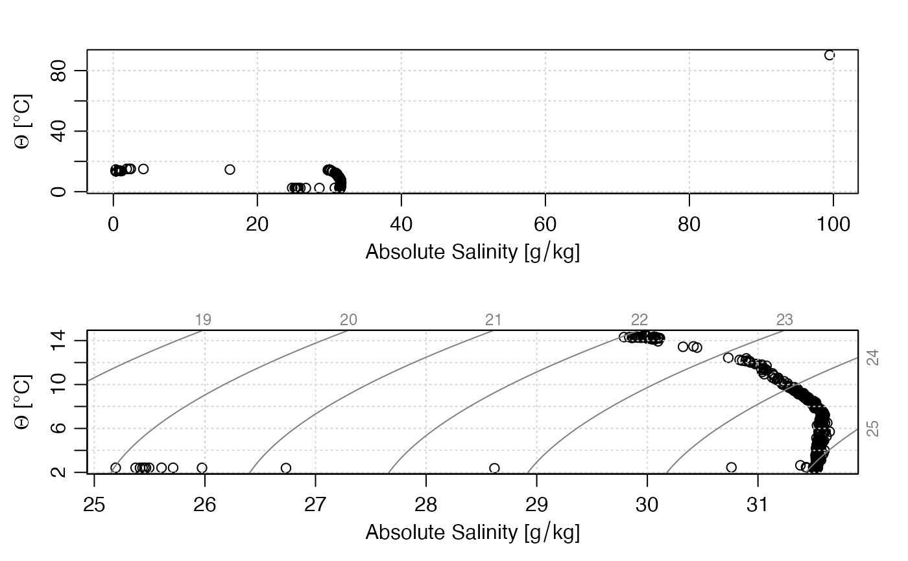

This function changes specified entries in the data-quality
flags of a ctd object, which are stored within
a list named flags that resides in the metadata
slot. If the object already has a flag set up for name,
then only the specified entries are altered. If not, the flag
entry is first created and its entries set to default,
after which the entries specified by i
are changed to value.
The specification is made with i, the form of which
is determined by the data item in question. Generally,
the rules are as follows:
If the data item is a vector, then i must be (a)
an integer vector specifying indices to be set to value,
(b) a logical vector of length matching the data item, with
TRUE meaning to set the flag to value, or (c)
a function that takes an oce object as its single
argument, and returns a vector in either of the forms
just described.
If the data item is an array, then i must be
(a) a data frame of integers whose rows specify spots to change
(where the number of columns matches the number of dimensions
of the data item), (b) a logical array that has dimension equal to
that of the data item, or (c) a function that takes an oce
object as its single input and returns such a data frame or array.
See “Details” for the particular case of ctd objects.
# S4 method for ctd setFlags( object, name = NULL, i = NULL, value = NULL, debug = getOption("oceDebug") )
| object | An oce object. |
|---|---|
| name | Character string indicating the name of the variable to be flagged. If
this variable is not contained in the object's |
| i | Indication of where to insert the flags; see “Description” for general rules and “Details” for rules for ctd objects. |
| value | The value to be inserted in the flag. |
| debug | Integer set to 0 for quiet action or to 1 for some debugging. |
An object with flags set as indicated.
Since all the entries in the data slot of ctd objects are vectors, i must be a vector (either logical as in Example 1 or integer as in Example 2), or a function taking a ctd object and returning such a vector (see “Indexing rules”).
This function was added in early May, 2018, and is likely to undergo changes until the mid-summer of that year. Use with caution.
Other functions relating to data-quality flags:
defaultFlags(),
handleFlags,adp-method,
handleFlags,argo-method,
handleFlags,ctd-method,
handleFlags,oce-method,
handleFlags,section-method,
handleFlags(),
initializeFlagScheme,ctd-method,
initializeFlagScheme,oce-method,
initializeFlagScheme,section-method,
initializeFlagSchemeInternal(),
initializeFlagScheme(),
initializeFlags,adp-method,
initializeFlags,oce-method,
initializeFlagsInternal(),
initializeFlags(),
setFlags,adp-method,
setFlags,oce-method,
setFlags()
Other things related to ctd data:
CTD_BCD2014666_008_1_DN.ODF.gz,
[[,ctd-method,
[[<-,ctd-method,
as.ctd(),
cnvName2oceName(),
ctd-class,
ctd.cnv,
ctdDecimate(),
ctdFindProfiles(),
ctdRaw,
ctdTrim(),
ctd,
d200321-001.ctd,
d201211_0011.cnv,
handleFlags,ctd-method,
initialize,ctd-method,
initializeFlagScheme,ctd-method,
oceNames2whpNames(),
oceUnits2whpUnits(),
plot,ctd-method,
plotProfile(),
plotScan(),
plotTS(),
read.ctd.itp(),
read.ctd.odf(),
read.ctd.sbe(),
read.ctd.woce.other(),
read.ctd.woce(),
read.ctd(),
subset,ctd-method,
summary,ctd-method,
woceNames2oceNames(),
woceUnit2oceUnit(),
write.ctd()
library(oce) # Example 1: Range-check salinity data(ctdRaw) ## Salinity and temperature range checks qc <- ctdRaw # Initialize flags to 2, meaning good data in the default # scheme for handleFlags(ctd). qc <- initializeFlags(qc, "salinity", 2) qc <- initializeFlags(qc, "temperature", 2) # Flag bad salinities as 4 oddS <- with(qc[["data"]], salinity < 25 | 40 < salinity) qc <- setFlags(qc, name="salinity", i=oddS, value=4) # Flag bad temperatures as 4 oddT <- with(qc[["data"]], temperature < -2 | 40 < temperature) qc <- setFlags(qc, name="temperature", i=oddT, value=4) # Compare results in TS space par(mfrow=c(2, 1)) plotTS(ctdRaw) plotTS(handleFlags(qc, flags=list(1, 3:9)))# Example 2: Interactive flag assignment based on TS plot, using # WHP scheme to define 'acceptable' and 'bad' codes if (FALSE) { options(eos="gsw") data(ctd) qc <- ctd qc <- initializeFlagScheme(qc, "WHP CTD") qc <- initializeFlags(qc, "salinity", 2) Sspan <- diff(range(qc[["SA"]])) Tspan <- diff(range(qc[["CT"]])) n <- length(qc[["SA"]]) par(mfrow=c(1, 1)) plotTS(qc, type="o") message("Click on bad points; quit by clicking to right of plot") for (i in seq_len(n)) { xy <- locator(1) if (xy$x > par("usr")[2]) break i <- which.min(abs(qc[["SA"]] - xy$x)/Sspan + abs(qc[["CT"]] - xy$y)/Tspan) qc <- setFlags(qc, "salinity", i=i, value=4) qc <- handleFlags(qc, flags=list(salinity=4)) plotTS(qc, type="o") } }